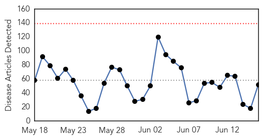
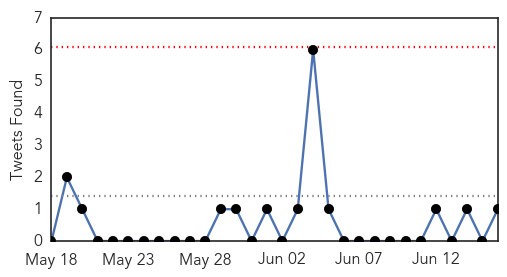
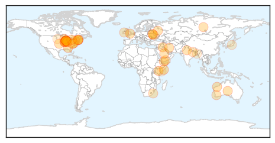
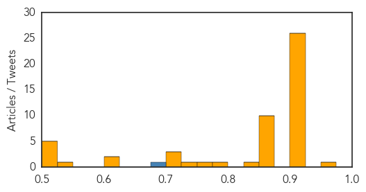

Toggle navigation
Early Warning
Daily Alerts
Unknown
Jun 16, 2014
Compare to:
-
Dengue Fever
Hemmorhagic Fever
Mold/Fungal Infection
Influenza
Meningitis
Pertussis / Whooping Cough
Middle East Respiratory Syndrome
Cholera
Hepatitis
Chikungunya
Yellow Fever
Bubonic Plague
West Nile Virus
Swine Flu
Ebola
Measles
Mumps
30 Day Trends
Web: 0
alerts
, 0
warnings
Twitter: 0
alerts
, 0
warnings
Top Articles:
Showing top 50 articles...
0.951
Q fever should be on producers’ radar screens
0.921
Rare, deadly mosquito virus found in WA's North West
0.918
Indiana: Shigella outbreak reported in Marion County
0.917
Chicago Tribune
0.917
Chicago Tribune
0.917
Chicago Tribune
0.917
Chicago Tribune
0.917
Chicago Tribune
0.917
Chicago Tribune
0.917
Chicago Tribune
0.917
Chicago Tribune
0.917
Chicago Tribune
0.917
Chicago Tribune
0.917
Chicago Tribune
0.917
Chicago Tribune
0.917
Chicago Tribune
0.917
Chicago Tribune
0.917
Chicago Tribune
0.917
Chicago Tribune
0.917
Chicago Tribune
0.917
Chicago Tribune
0.917
Chicago Tribune
0.917
Chicago Tribune
0.917
Chicago Tribune
0.917
Chicago Tribune
0.917
Chicago Tribune
0.917
Chicago Tribune
0.874
The Enemy Within: Tackling Schistosomiasis in Yemen
0.866
Tornado kills 1, injures 16 in Nebraska town -sheriff
0.866
Iran, U.S. discussed 'disastrous' situation in Iraq-Iranian official
0.866
Ukrainian president seeks truce to push peace plan
0.866
Russia sees significant risks for EU gas supplies via Ukraine-Gazprom CEO
0.866
Saudi Arabia says rejects foreign intervention in Iraq
0.866
Activists of India's Congress party burn effigies representing leaders of AAP and Goyal, minister of state for power, coal, and new and renewable energy, during a protest in New Delhi
0.866
Russia's Medvedev says open to gas talks if Ukraine pays off debt
0.866
Ukraine's Naftogaz files lawsuit against Gazprom in Stockholm court
0.866
Gazprom files lawsuit in Stockholm court to recover Ukraine debt
0.841
Serious mosquito-borne viruses detected in WA's north prompts warning
0.784
Govt must open its eyes to TB
0.759
Mosquito-borne virus warning for north WA
0.747
Fears over possible widespread misdiagnosis of Lyme disease
0.724
Ticks showing up in force, prompting state call to be vigilant
0.719
Encephalitis claims 25 children in 48 hours in Bihar
0.713
Outbreak Of Ticks, Lyme Disease Carriers, Set To Emerge In New England
0.612
Emergency immunisation drive to tackle encephalitis in Bihar, U.P.
0.604
“Tick”ing time bomb across Chatham-Kent
0.533
Thousands of flood-affected people in Kismayo receive emergency support - Somalia
0.515
Dhaka reports first case of MERS virus
0.512
The importance of preventive health care
0.507
Somalia: Thousands of flood-affected people in Kismayo receive emergency support
Top Tweets:
0.684
“@WHO: On 12 and 13 June 2014 SaudiArabia notified WHO of 2 additional lab-confirmed Middle East respiratory syndrome cases MERS”
Web/News Articles

Tweets

Article Locations

Article Confidences
